图片的排列方式：
方法一：par()函数
- 注意要在绘图函数的前面使用！
- 例如下面所创建的绘图按两行两列排列
library(palmerpenguins)
head(penguins)
par(mfrow=c(2,2))
hist(penguins$bill_length_mm)
hist(penguins$bill_depth_mm)
hist(penguins$flipper_length_mm)
hist(penguins$body_mass_g)
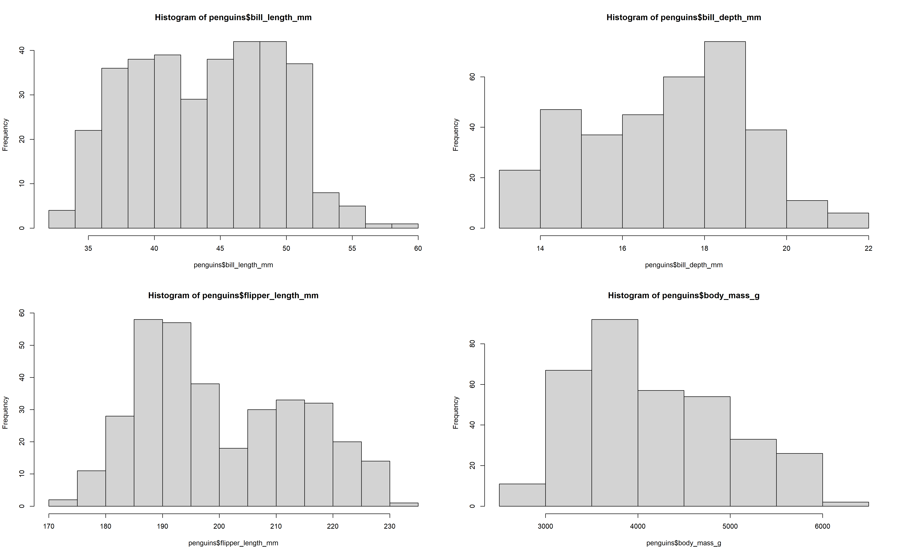
dev.off()#如果不加这个的话在rmd文件中运行绘图下一个chunk里hist会直接叠加上去
- 其中还一个参数是fig，如以下代码，因为画布是一个从左下角坐标点（0，0）到右上角坐标点（1，1）的平面坐标系。ig=c(0,0.8,0.55,1)则是指直方图的横坐标从0到0.8，纵坐标从0.55到1，也即直方图在画布中的具体位置。函数mtex表示加在画布上的标题名。
par(fig=c(0,0.8,0.55,1),new=TRUE)
hist(penguins$body_mass_g)
mtext("histogram", side=3,outer=TRUE, line=-3)
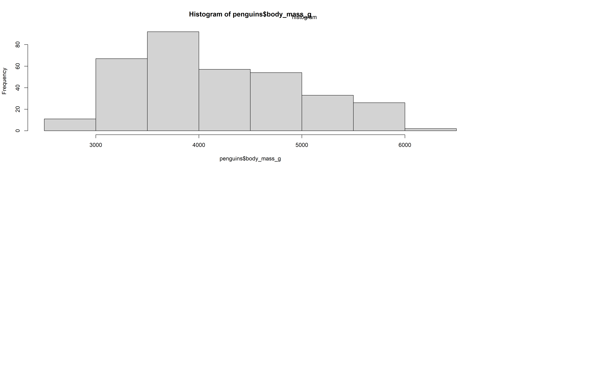
方法二：layout()函数
- 注意使用该函数时，里面的第一个参数为一个矩阵，用于指定图片的位置！
- 例如下面所创建的绘图第一行包含一张图片，而第二行包含两张图片，还可以用widths和heights来控制图片大小
layout(matrix(c(1, 1,
2, 3), nrow=2, byrow=TRUE))
layout.show(n=3)
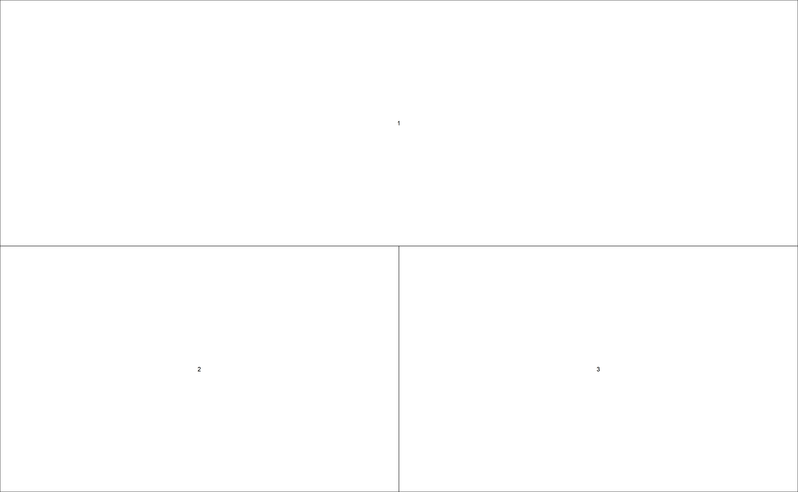
hist(penguins$bill_length_mm)
hist(penguins$bill_depth_mm)
hist(penguins$flipper_length_mm)
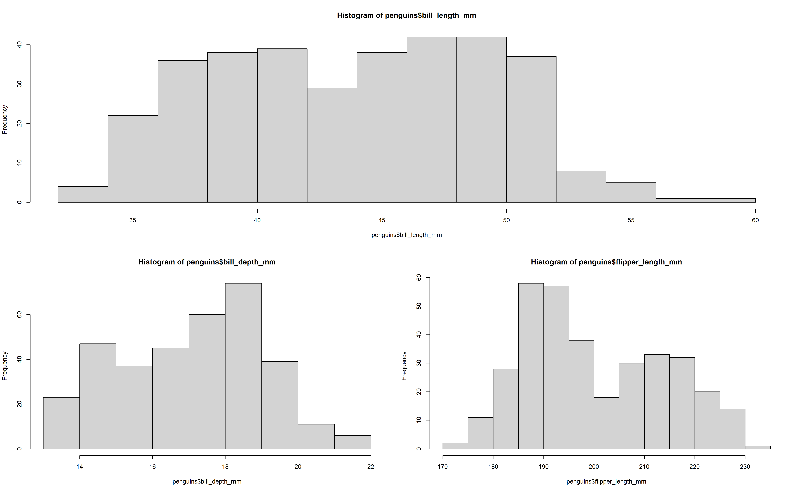
#表示展示三张图片，如果n为2则只展示两张图，也就是不显示bill_length_mm的图片，如果为1则只显示flipper_length_mm的图片，也就是从下往上的代码进行编号的，但是在使用matrix把画布分裂成2*2的cell的时候，是按绘图代码的从上往下编号，也就是bill_length_mm的图会填充进编号为1的cell的位置中，bill_depth_mm的图会填充进编号为2的cell的位置中（也就是第二行的左边）
方法三：cowplot包
- 注意针对的是ggplot的对象！
- 具体教程见此(注意从顶部菜单栏articles处可以选择不同方面功能查看)
表格的展示
主要使用的包是kableExtra
关于在pdf中展示表格见此处
关于在html中展示表格见此处
准备数据
setwd("E:/academic_resources/Tutorials/analysis")
antdat <- read.csv("../data/data.csv",header = T)
str(antdat)
antdat$tree<-as.factor(antdat$tree)
antdat$habitat<-as.factor(antdat$habitat)
antdat$observer<-as.factor(antdat$observer)
antdat$group<-as.factor(antdat$group)
antdat2 <- read.csv('../data/datapstay.csv')
summary(antdat2)
antdat2$habitat <- as.factor(antdat2$habitat)
antdat2$group <- as.factor(antdat2$group)
antdat2$observer <- as.factor(antdat2$observer)
library(car)#for family=binomial(lgoit)
library(lme4)#for glmer model
library(emmeans) #for pairwise comparisons
mod.run<- glmer(cbind(new.Total.number.of.ants.after.disturbance,
Total.number.of.ants.before.disturbance-new.Total.number.of.ants.after.disturbance
) ~habitat*group + (1|observer), data = antdat, family=binomial(logit), na.action=na.omit)
library(kableExtra)
注意生成表格的格式是html，适合用于rmd文件的用于html输出中或者仅仅用于预览，如果是在rmd的pdf输出中应该改为latex
Anova的展示
#scientific = TRUE表示使用科学计数法；digits = 2表示保留两位小数。
#bootstrap_options表示网页中表格的一些形式，例如"striped"表示给表格加上斑马纹, "hover"表示给表格加上悬浮效果, "condensed"表示使得每行不那么宽，更紧凑点, "responsive"表示让表格样式随屏幕宽度变化，更适合手机屏。
#full_width = F是为了防止表格过宽。
#position = "center"表示表格在网页或文本中的位置，也就是居中
#latex_options = c("hold_position")表示使得表格就在固定位置，如果不写这个，那么在rmd生成pdf文件时，表格会被统一放到图片后面
#另外还可以在kable中写入font_size = 7来调整表格中的字体大小。
kable(Anova(mod.run),format.args = list(scientific = TRUE),digits = 2, "html") %>%
kable_styling(bootstrap_options = c("striped", "hover", "condensed", "responsive"), full_width = F, position = "center", latex_options = c("hold_position"))
|
|
Chisq
|
Df
|
Pr(>Chisq)
|
|
habitat
|
2.6635e+02
|
2e+00
|
0e+00
|
|
group
|
3.7076e+02
|
1e+00
|
0e+00
|
|
habitat:group
|
2.7980e+01
|
2e+00
|
0e+00
|
Summary的展示
#因为只需要展示summary中表示固定因子是否显著的信息，因此使用coef函数，如果直接把summary放进去是无法展示的。
kable(coef(summary(mod.run)),format.args = list(scientific = TRUE),digits = 2, "html") %>%
kable_styling(bootstrap_options = c("striped", "hover", "condensed", "responsive"), full_width = F, position = "center", latex_options = c("hold_position"))
|
|
Estimate
|
Std. Error
|
z value
|
Pr(>|z|)
|
|
(Intercept)
|
2.66e+00
|
4.0e-01
|
6.64e+00
|
0e+00
|
|
habitatfruit_garden
|
-6.20e-01
|
9.0e-02
|
-7.29e+00
|
0e+00
|
|
habitatrainforest
|
-2.40e-01
|
1.0e-01
|
-2.44e+00
|
1e-02
|
|
grouptreatment
|
-4.80e-01
|
9.0e-02
|
-5.33e+00
|
0e+00
|
|
habitatfruit_garden:grouptreatment
|
-3.00e-01
|
1.1e-01
|
-2.79e+00
|
1e-02
|
|
habitatrainforest:grouptreatment
|
-6.40e-01
|
1.2e-01
|
-5.25e+00
|
0e+00
|
多重比较的展示
#因为只需要展示emmeans中表示固定因子下各个水平的差异是否显著的信息，因此使用[[]]进行对结果信息的选择，如果直接把emmeans放进去是无法展示的。
kable(emmeans(mod.run, pairwise~group,by="habitat", adjust="tukey")[[2]],format.args = list(scientific = TRUE),digits = 2, "html") %>%
kable_styling(bootstrap_options = c("striped", "hover", "condensed", "responsive"), full_width = F, position = "center", latex_options = c("hold_position"))
|
contrast
|
habitat
|
estimate
|
SE
|
df
|
z.ratio
|
p.value
|
|
control - treatment
|
eco_forest
|
4.80e-01
|
9e-02
|
Inf
|
5.330e+00
|
0e+00
|
|
control - treatment
|
fruit_garden
|
7.80e-01
|
6e-02
|
Inf
|
1.263e+01
|
0e+00
|
|
control - treatment
|
rainforest
|
1.11e+00
|
8e-02
|
Inf
|
1.428e+01
|
0e+00
|
双坐标轴和随机数生成：
#set.seed用来设置随机种子 如过设置了随机种子，那么每次的随机数相同，便于重复。
set.seed(123)
#使用sample函数是为了生成1-10范围内15个整数，当replace=T时是在[a,b]内有放回的随机抽出n个整数。
a <- sample(1:100,15,replace=T)
#使用runif函数是为了生成1-10范围内，符合均匀分布的15个小数
b <- runif(15,1,10)
#使用rnorm函数是生成符合正态分布，均值为7，标准差为2的15个数据（如果默认则是mean=0，sd=1的标准正态分布）
c <- rnorm(150, mean = 7, sd = 2)
d <- rnorm(150, mean = 4, sd = 2)
#使用rep函数产生5个20，4个40，6个70.
e <- rep(c(20,40,70),times=c(5,4,6))
#使用cbind表示把向量abcde按列合并成数据框,如果有向量其中数字的个数不一样的，会使用重复来向最长的那个对齐
#做点图和线图叠加，发现坐标轴范围差异很大因此有许多问题，这时就需要做双坐标了
datf <- as.data.frame(cbind(a,b,c,d,e))
datf
ggplot(data=datf)+
geom_line(aes(x=c,y=d))+ #可以看出做线的数据来源x和y的范围都是在1-10
geom_point(aes(x=a,y=e),color="red",size=6)#以看出做点的数据来源x和y的范围都是在1-100
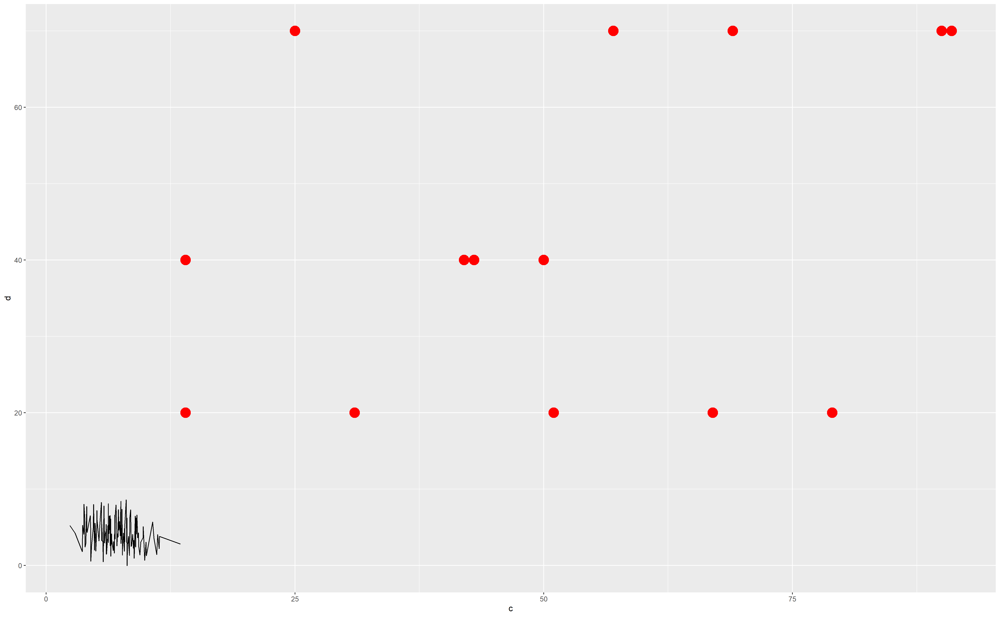
#为图片添加双x轴和双y轴。
ggplot(data=datf)+
scale_y_continuous(name = "E", limits = c(1,100), sec.axis = sec_axis(~(10/100)*., name = "D"))+ #做双y轴，注意范围为1-100的e在主轴，范围1-10的d在次轴
scale_x_continuous(name = "A", limits = c(1,100), sec.axis = sec_axis(~(10/100)*., name = "C"))+ #做双x轴，注意范围为1-100的a在主轴，范围1-10的c在次轴
geom_line(aes(x=c*(100/10),y=d*(100/10)))+ #可以看出做线的数据来源x和y的范围都是在1-10 #注意因为c，d在次轴，因此数据源大小也要根据轴的比例做更改了，否则将无法显示在图片上
geom_point(aes(x=a,y=e),color="red",size=6)+ #注意因为a，e在次轴，因此数据源大小不需要根据轴的比例做更改了。
theme(axis.text.y=element_text(size=rel(0.5)),axis.text.y.right=element_text(size=rel(4)))#这个是调整y坐标轴刻度数字的大小，x是同样的，前者axis调的是主轴的，后者axis调的是次轴的。
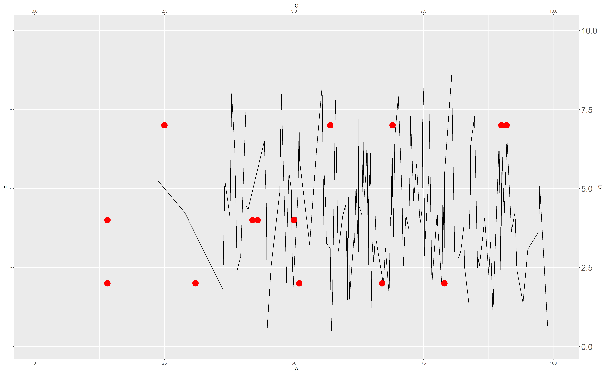
小提琴图和显著性标签
方法一：
setwd("E:/academic_resources/Tutorials/analysis")
library(car)#for family=binomial(lgoit)
library(lme4)#for glmer model
library(tidyverse)#for %>%
library(emmeans) #for pairwise comparisons
library(ggplot2)# for plotting
library(rstatix)#for function of add_xy_position()
library(ggpubr)#for function of stat_pvalue_manual()
#准备数据
antdat <- read.csv("../data/data.csv",header = T)
str(antdat)
antdat$tree<-as.factor(antdat$tree)
antdat$habitat<-as.factor(antdat$habitat)
antdat$observer<-as.factor(antdat$observer)
antdat$group<-as.factor(antdat$group)
antdat2 <- read.csv('../data/datapstay.csv')
summary(antdat2)
antdat2$habitat <- as.factor(antdat2$habitat)
antdat2$group <- as.factor(antdat2$group)
antdat2$observer <- as.factor(antdat2$observer)
#建立模型
mod.run<- glmer(cbind(new.Total.number.of.ants.after.disturbance,
Total.number.of.ants.before.disturbance-new.Total.number.of.ants.after.disturbance
) ~habitat*group + (1|observer), data = antdat, family=binomial(logit), na.action=na.omit)
#得到glmm模型的预测值
##创建含有x的新数据集preddat
preddat <- expand.grid(habitat=c('eco_forest', 'fruit_garden','rainforest'),
group=c('control', 'treatment'),
observer =c('lpy', 'wg', 'wyd', 'zyx'))
summary(preddat)
preddat
##检查并确保含有x的新数据集preddat与原数据集中的名字和数量一样
levels(preddat$habitat)
levels(antdat$habitat)
levels(preddat$group)
levels(antdat$group)
levels(preddat$observer)
levels(antdat$observer)
##把使用predict函数根据模型创建出来的新y（受了固定因子和随机因子的影响）放入新数据集preddat当中。
preddat$pred.fix1 <- predict(mod.run, newdata=preddat, re.form=NULL, type= 'response')
head(preddat,n=12)
preddat$pred.fix1
#得到用于绘制显著性标签的信息（包括在图中应该的位置，星号等）
##只是为了得到用于绘制标签的数据框，但其中计算的方法p值是错的
a1_step<- preddat %>% group_by(group) %>%
tukey_hsd(pred.fix1 ~habitat) %>%
add_xy_position(x = "habitat", dodge = 0.8)
##得到真正的p值,并且提取所需要的信息
b1_step<- emmeans(mod.run, pairwise~habitat,by="group", adjust="tukey")
pval1 <- as.data.frame(b1_step$contrasts)$p.value
groupname1 <- as.data.frame(b1_step$contrasts) $contrast
##把提取的信息合成另一个含有真正p值信息的数据框
c1_step <- data.frame(groupname1,pval1)
##增加星号表示显著性的信息
d1_step<- c1_step %>% adjust_pvalue(p.col = "pval1", method = "bonferroni") %>%
add_significance(p.col = "pval1.adj")
##把两个数据框合并
e1_step<-cbind(a1_step,d1_step$pval1,d1_step$pval1.adj.signif)
#绘制小提琴图，最后再加上显著性的标签
##创建图层使用ggplot(),在这其中不像一般那样加入了数据来源和xy轴的信息，是因为下面使用了图层叠加的方式，各个图层的数据来源都有可能不一样
## 使用geom_jitter而不是geom——point把原始数据绘上去是因为前者能够为每个原始数据点的位置增加了少量的随机变化，是处理较小数据集的离散性造成的过度绘图的一个有用方法。
##geom_violin是用来绘制小提琴图的，它比箱线图更灵活是因为它还展现了数据分布密度曲线。
##stat_summary是用来绘制error bar的。
##theme_bw(base_size = 25)表示图片背景是包含线条的白色，还有其他选择，里面的参数base_size = 25是用来调整主要图中包括点和线和小提琴等图片信息与图注信息的大小比例的。
##
##facet_wrap(.~group,nrow=1)是表示图片按照group这个固定因在分面，分成了两张图片放在一起，例如group下有两个水平，是treatment和control，因此是两张图片包含这两组中habitat和pstay的关系信息，nrow就表示这两张图片都在一行，如果是nrow=2，那么将会排场一列。如果再nrow的参数后面在添加参数`scales = "free_x"`那么将使得分面的图的x坐标是更灵活更适应那组信息本身，否则几个面的x轴都是固定一致的，有时候会发生x信息拥挤在一起的状况。
#scale_y_continuous是用来调整y轴的信息，例如数值范围和数值间隔等
##stat_pvalue_manual就是用来绘制显著性标签的了，其中bracket.size表示标签线条的大小，hide.ns = F表示不因此非显著的信息
ggplot()+
geom_jitter(data=antdat2,aes(x=habitat,y = pstay,fill=habitat,group=group,alpha=0.6,color=habitat),size=5)+
geom_violin(data=antdat2,aes(x=habitat,y = pstay),colour="#200808f0",fill=NA)+
stat_summary(data=antdat2,aes(x=habitat,y = pstay),fun.data = "mean_sd",position=position_dodge(0.15),geom = "errorbar",width = .1)+
stat_summary(data=antdat2,aes(x=habitat,y = pstay),fun = "mean", geom = "point", position=position_dodge(0.15),show.legend = F)+
scale_size_continuous(range=c(1,10))+
theme_bw(base_size = 25)+
facet_wrap(.~group,nrow=1)+
theme(legend.position = "none") +
scale_y_continuous(name = "Pstay", limits = c(0,1.50), breaks=c(0,0.25,0.5,0.75,1.0,1.25,1.50))+
stat_pvalue_manual(e1_step,label="d1_step$pval1.adj.signif",
y.position =c(1.2,1.3,1.4),
color = "#010101", label.size=8,bracket.size=0.5,hide.ns = F)
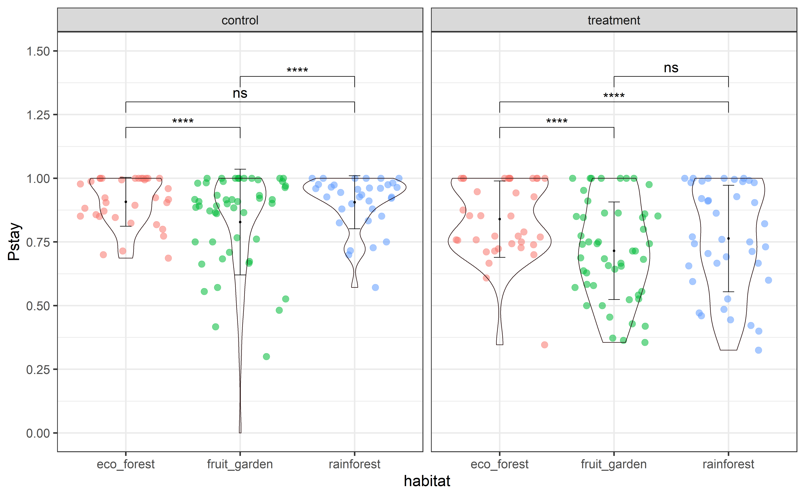
方法二：
library(introdataviz)#for function of geom_split_violin
library(ggtext)#for function of geom_text()
library(ggprism)#for `guide = "prism_offset_minor"`
#数据和其他包接上一个chunk
#与上一组使用facet_wrap(.~group,nrow=1)来分面绘制图片，这个分裂小提琴表示的信息也是一样的，也是用来分组来反应信息的，但是只能是两两的对比，因此这里是根据固定因子habitat来分面，而且在这里，不用facet_wrap了，而是用group_by提前先把数据分好类再绘图！！
#在这里添加显著性信息的方法是geom_text，更灵活，是因为可以自己规定xy的位置以及内容，但是没用横着的中括号了，仅有label的信息，因为单个的分裂小提琴本事就包含了是两组信息的对比，因此只要把这两组的显著性信息标于其上就可以了。
##但是缺点是要提前先跑一下`emmeans(mod.run, pairwise~group,by="habitat", adjust="tukey")`来查看一下p值，然后在在geom_text中自定义
antdat2_t <- antdat2 %>% group_by(habitat)
ggplot(antdat2_t,aes(x = habitat, y = pstay,fill= group))+
geom_split_violin(trim =F,color = NA,adjust = 1.5,alpha=0.7)+
guides(fill=guide_legend(title="group"))+
scale_fill_manual(values = c("#abd1f7","#f79489f7"))+
stat_summary(fun.data = "mean_sd",position=position_dodge(0.15),geom = "errorbar",width = .1)+
stat_summary(fun = "mean", geom = "point", position=position_dodge(0.15),show.legend = F)+
scale_y_continuous(limits = c(0,1.50), breaks=c(0,0.25,0.5,0.75,1.0,1.25,1.50),guide = "prism_offset_minor")+
theme_bw(base_size = 25)+
geom_text(label="***", x="eco_forest", y=1.4, size=10)+
geom_text(label="***", x="fruit_garden", y=1.4, size=10)+
geom_text(label="***", x="rainforest", y=1.4, size=10)
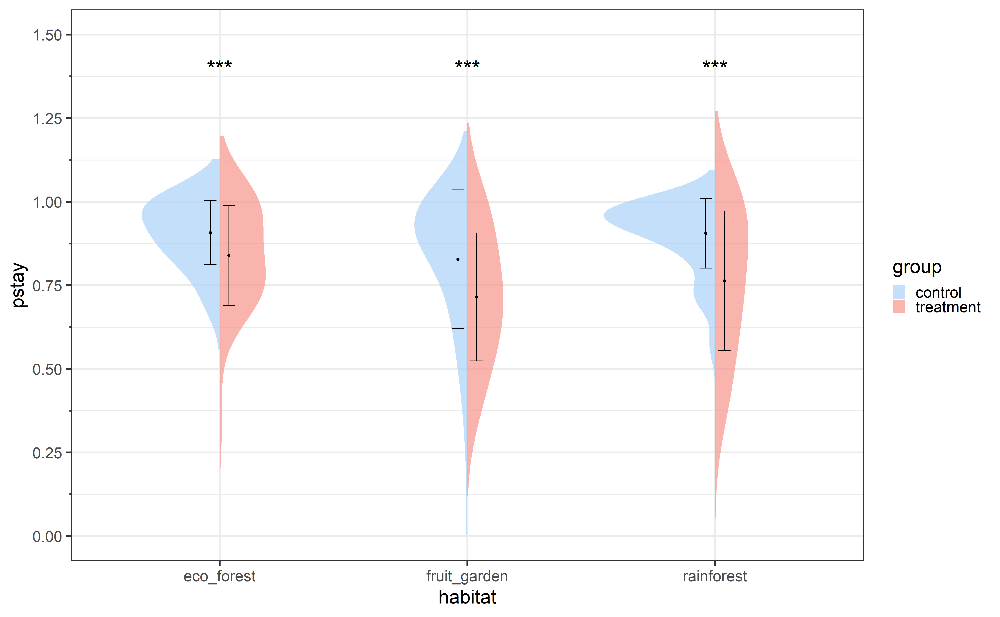
方法三：
setwd("E:/academic_resources/Tutorials/analysis")
library(lme4)#for lmm model
library(data.table)# for function of melt
library(emmeans) #for comparisons
library(ggplot2)# for plotting
library(ggpubr)#for function of stat_pvalue_manual()
library(SOfun)#for function of mc_tribble()
library(tidyverse)#for function of tribble()
library(Rmisc)#for function of summarySE
#准备数据
pests <- read.csv('../data/Pesticide.csv')
pests$station <- as.factor(pests$station)
pests$trt <- as.factor(pests$trt)
#建立模型
LMM.fit<- glmer(N~trt+(1|station),pests,family=poisson())
#准备为绘制显著性标签的信息
##得到含有p值信息的数据框
p.val.test<-pwpm(emmeans(LMM.fit, ~ trt),means = FALSE, flip = TRUE,reverse = TRUE)
p.val.test<-sub("[<>]", "", p.val.test)
p.matx<-matrix(as.numeric((p.val.test)),nrow = length(p.val.test[,1]),ncol = length(p.val.test[,1])) #if your factor has 5 levels ncol and nrow=5
rownames(p.matx) <- colnames(p.matx) <-colnames(p.val.test)
p.matx[upper.tri(p.matx, diag=FALSE)] <- NA
stat.test<-subset(melt(p.matx),!is.na(value))
names(stat.test)<-c("group1","group2","p.adj")
##添加p值大小与星号个数相对应的信息
stat.test[stat.test$p.adj<=0.001,"p.adj.signif"]<-"***"
stat.test[stat.test$p.adj>0.001 & stat.test$p.adj<=0.01,"p.adj.signif"]<-"**"
stat.test[stat.test$p.adj>0.01 & stat.test$p.adj<=0.05,"p.adj.signif"]<-"*"
stat.test[ stat.test$p.adj>0.05,"p.adj.signif"]<-"ns"
##运行下面这第一行代码已得到真正的数据框形式的数据集，再把结果粘贴后把结果运行一遍
stat.test<-mc_tribble(stat.test) # copy & paste the result of this line before the line of ggboxplot!!
stat.test <- tribble(
~group1, ~group2, ~p.adj, ~p.adj.signif,
"fungicide","control",1e-04,"***",
"insecticide","control",1e-04,"***",
"insecticide","fungicide",1e-04,"***")
#绘制箱线图并且加上显著性的信息
##此处是绘制箱线图
bxp<-ggboxplot(pests, x = "trt", y = "N",color = "trt", palette = "jco",add = "jitter",bxp.errorbar=T)
##此处是为了得到绘制显著性标签的位置信息
pests_count <- summarySE(pests,measurevar = "N",
groupvars = c("trt"),
na.rm = TRUE)
##此处是给箱线图加上显著性信息
bxp + stat_pvalue_manual(stat.test,xmin="group2",xmax="group1",
y.position = max(pests$N)+pests_count$sd,
color = "midnightblue")
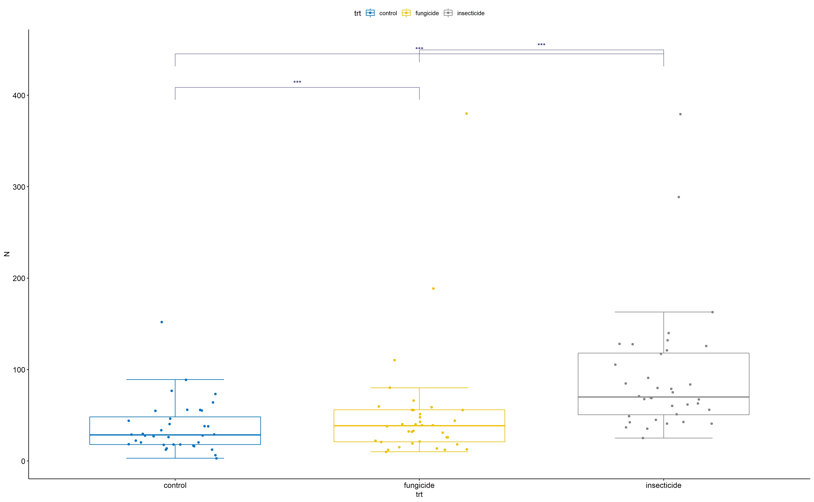
相关性气泡图
#数据准备
library(tidyverse)#为了使用 %>%
library(corrplot)#为了做气泡图
library(car)#为了展示数据集
mtcars
#绘制表示相关性大小的气泡图
##method = "circle：表示用圆圈表示相关性大小； "square"表示用方形表示； "ellipse"表示用椭圆形；"number"表示用相关系数大小； "shade"表示用方块和阴影； "color"表示用方块马赛克效果；"pie"表示用饼图
##order中：'original'表示原始顺序（默认）。AOE'表示特征向量的角度顺序。'FPC'为第一主成分顺序。'hclust'为分层聚类的顺序。'alphabet'为字母顺序。
##type = "full"表示图全展示，其实是对称的，因此可以选择只展示一般，写入参数upper或lower
##tl.col = "black"表示用来看相关性比较序列的变量的名称的颜色
cor(mtcars) %>% corrplot(method = "pie",order = "hclust",
type = "upper",tl.srt = 45,tl.col = "black")
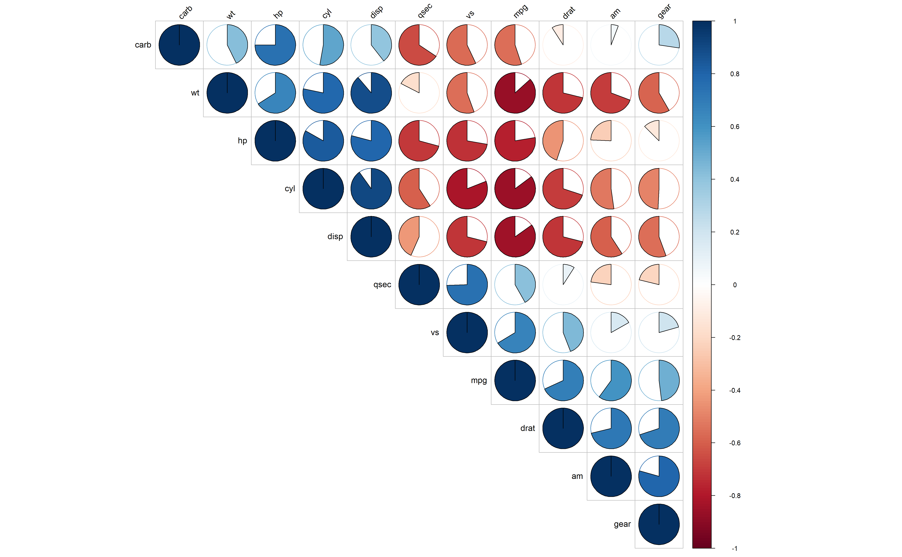
#联合相关性的显著性结果一起显示
##先对相关性是否显著进行计算
res1 <- cor.mtest(mtcars)
##sig.level = -1，表示显示所有p值；如果=.05，则会将所有在p值> 0.05的圆圈上打X；如果=.01，那么在p值> 0.01的点上打X
cor(mtcars)%>% corrplot(type="lower", order="hclust",tl.srt = 45,
tl.col = "black",
p.mat = res1$p,insig = "p-value",sig.level = -1)
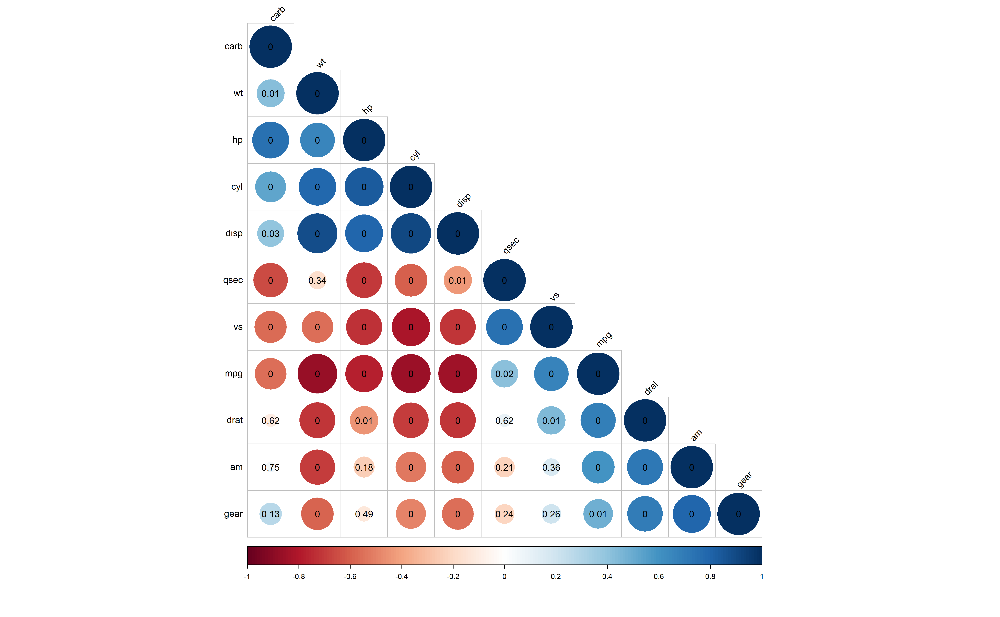
##insig = "p-value"，显示不显著点的p值，如果是insig = "blank"则表示将不显著的点用空表示
cor(mtcars)%>% corrplot(type="lower", order="hclust",
p.mat = res1$p,insig = "blank")
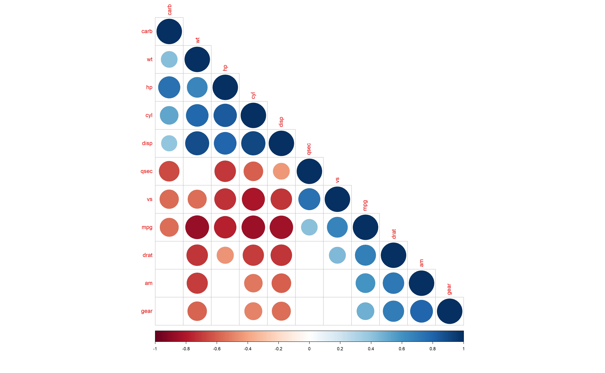
##将p值大小转化为星号叠加在图上
cor(mtcars) %>% corrplot(type="lower", order="hclust",
p.mat = res1$p,insig = "label_sig",
sig.level = c(.001, .01, .05),
pch.cex = .9, pch.col = "white",
tl.srt = 45,tl.col = "black")
